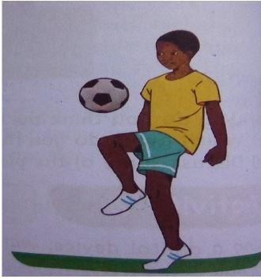
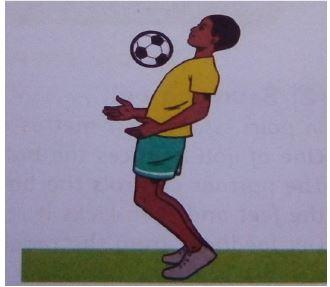
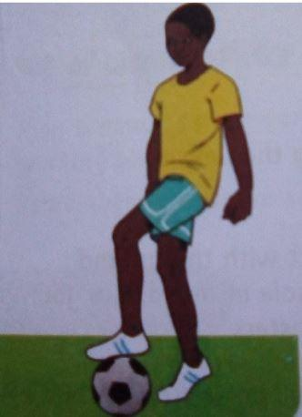

Trapping
Trapping involves receiving and controlling the ball in a soccer game.
Trapping - Using the Thigh
The thigh trap is where a player controls the ball with the upper part of the leg between the knee and the hips; this part is called the thigh. The thigh trap is applied when the ball is below the chest level but too high to be controlled using the foot.
Safety Instructions
- Avoid pushing and kicking one another while playing.
- Wear appropriate attire while playing.
- Warm up before and cool down the body after the activities.
Warm Up Activity
- Jog around the marked area with moderate arm action and moderate knee lift.
- Chase and tag partners within the marked area.
- Knee raiser; from a standing position, raise your right and left knees in turns. Perform the activity for 20 seconds continuously.
Cool Down Activity
- Walk at a moderate speed, swinging arms up and down.
- From a standing position, arms are raised up, stretching the body upwards, breathing in deeply.
Learning Points
- Stand feet shoulder-width apart.
- Face the direction of the oncoming ball.
- Elbows should be away from your body for balance.
- Lift the thigh so that it is horizontal to the balance leg.
- As the ball makes contact with the thigh, drop the thigh to cushion the ball to the feet.
Trapping - Using the Chest
Chest trap involves controlling, stopping, or bringing the ball under control using the chest. This may be done to a flight or to a bouncing ball.
Safety Instructions
- Avoid pushing and kicking one another while playing.
- Wear appropriate attire while playing.
- Use protective equipment like shin guards and chest protectors.
- Follow the instructions given by your teacher.
- Maintain self-discipline.
- Warm up before and cool down the body after the activities.
Warm Up Activities
- Jog on the spot - Start the activity slowly and increase the speed gradually.
- Rhythmical jumps - Make jumps landing on the balls of the feet. Start with jumping a low height and later a higher height. The hands should contact the knees while jumping.
- Trunk rotation - Start with the feet shoulder-width apart and hands akimbo. Rotate the upper part of the body by leaning backwards, leaning to the right side, forward, and then to the left side.
- Half squats - From a standing position, hands raised upwards, make a half squat maintaining upright posture.
Cool Down Activity
- Walk at a moderate speed, swinging hands round.
- From a standing position, hands raised up, stretch the body upwards, breathing upright posture.
Learning Points
- Stand feet shoulder-width apart.
- Face the direction of the oncoming ball.
- Arms extended forward with an open chest.
- Lean slightly backwards to cushion the ball on the moment of contact.
- Recover to a normal upright position after trapping the ball.
OR
- Stand feet shoulder-width apart, facing the oncoming ball.
- The body should be positioned behind the flight of the ball.
- The knees should be slightly bent.
- Elbows should be held away from the body, and hands clear of the chest.
- Bend at the waist and lean forward over the rising ball.
- Withdraw the chest immediately after the ball is touched to cushion it back down to your feet.
Trapping - Using the Sole
Trapping using the sole involves placing the foot on top of the ball while the ball is in play to prevent it from bouncing off or rolling away.
Safety Instructions
- Avoid pushing and kicking one another while playing.
- Wear appropriate attire while playing.
- Follow the instructions given by your teacher.
- Maintain self-discipline.
- Warm up before and cool down the body after the activities.
Warm Up Activities
- Jumping jacks - While jumping with feet apart and feet together rhythm, raise the hands up and sideways as feet open and close.
- Walking knee hugs - While walking, hold one of your knees with both hands, bringing it close to the chest.
- Leg swings - In a standing position and hands akimbo, swing one leg backwards and forward repeatedly.
Cool Down Activities
- Seated forward bends - Start from a seating position and with the feet together. Bend forward slowly to hold your toes with your hands. Recover to a normal seating position.
- Body shakes - Gently shake your right arm, then your left arm, and then both arms at the same time. Then shake your right leg, then your left leg. Next, shake your head, your hips, and your whole body.
Learning Points
- Focus on the oncoming ball.
- Hands should be slightly outwards for balance.
- The knee of the trapping foot should be slightly bent, and the foot off the ground.
- As the ball makes contact with the ground, apply slight pressure on the ball with the sole to control it.